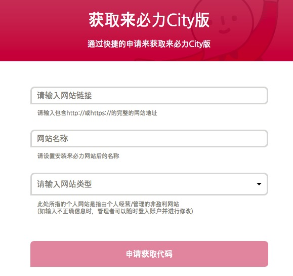
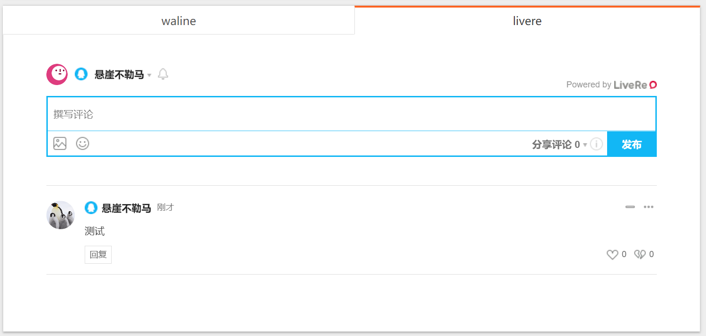
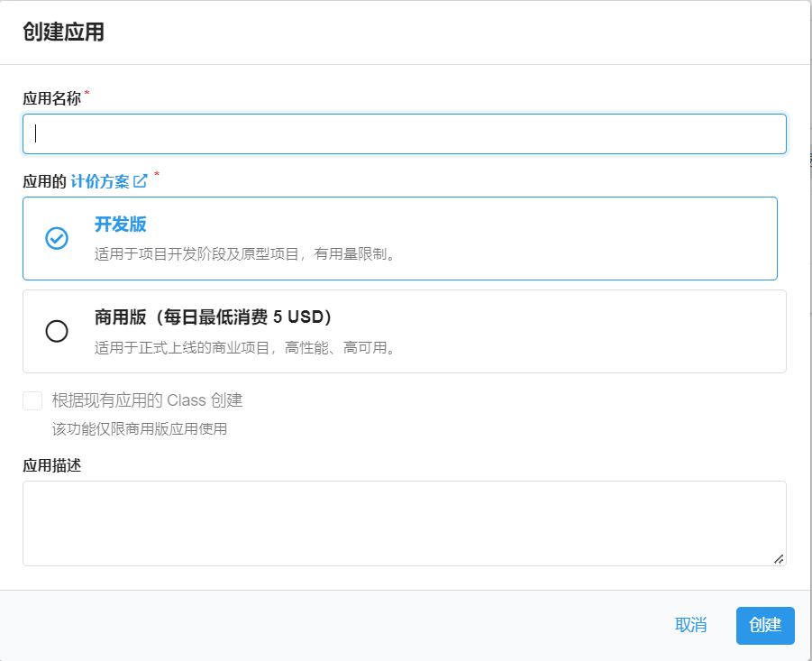
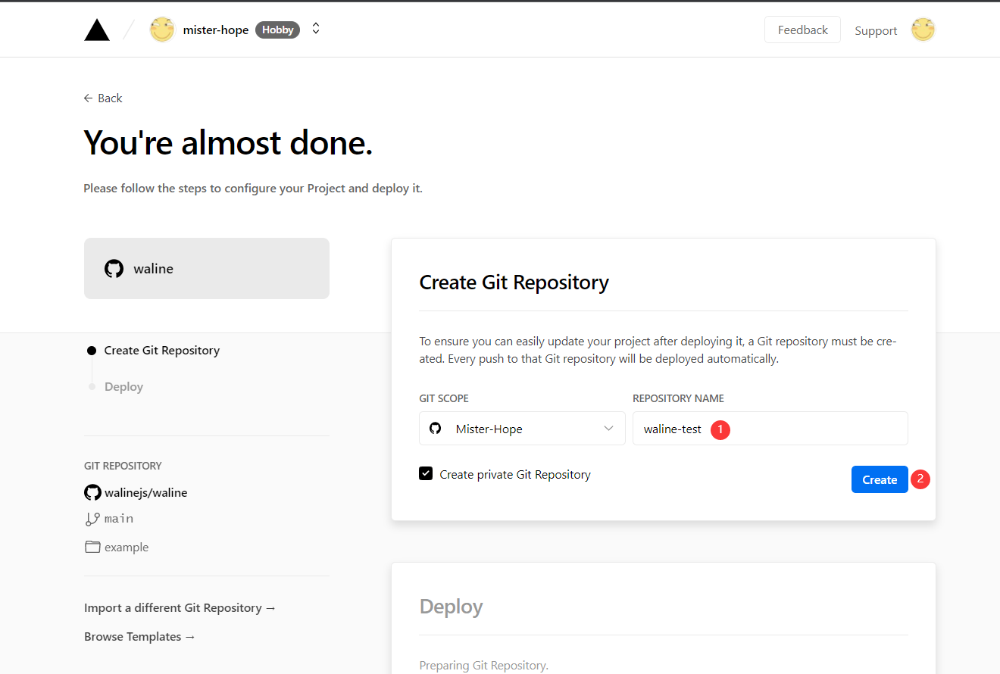
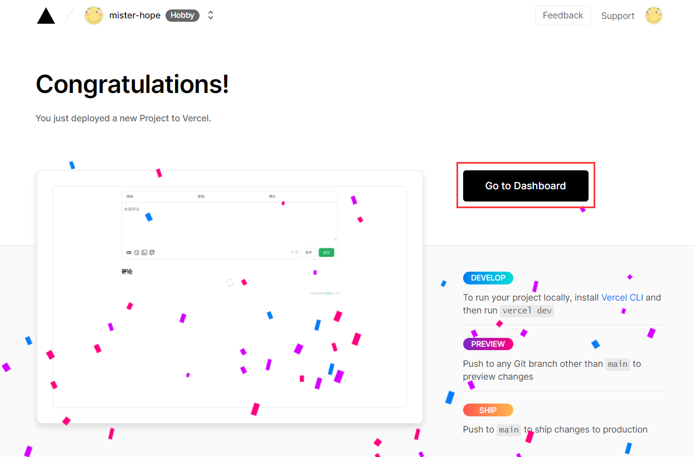
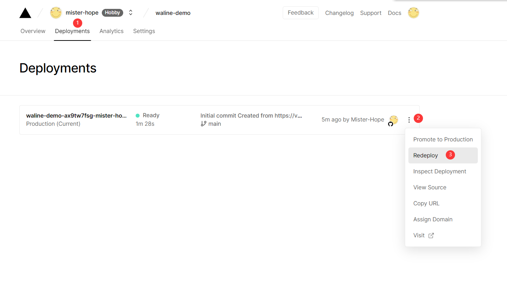
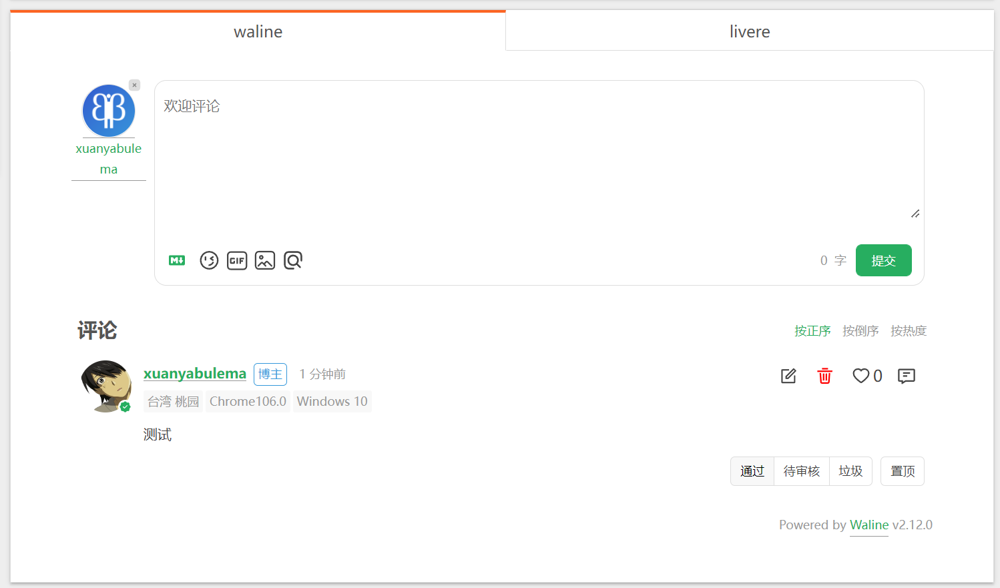

Hexo NexT 主题添加评论系统
前言
为自己的Blog添加一个评论系统不仅有趣，也有利于交流。
Hexo支持多个评论系统同时启用，NexT主题默认支持disqus | disqusjs | changyan | livere | gitalk | utterances等评论系统
# Available values: disqus | disqusjs | changyan | livere | gitalk | utterancesLiveRe配置教程
最新版 hexo-theme-next 已经包含 LiveRe 插件，下载最新版本，配置 livere_uid 即可使用。
注册 LiveRe
进入 LiveRe，注册账号。
LiveRe 有两个版本：
- City 版：是一款适合所有人使用的免费版本；
- Premium 版：是一款能够帮助企业实现自动化管理的多功能收费版本。
安装，获取 uid：

填写（都可以随便填写）完成后，进入到 管理页面 -> 代码管理 -> 一般网站 代码中，data-uid 即为所需 uid。
配置 LiveRe
找到NexT主题配置文件，在其中填写uid即可
# LiveRe comments system
# You can get your uid from https://livere.com/insight/myCode (General web site)
livere_uid: # <your_uid>
Waline配置教程
LeanCloud 设置 (数据库)
-
点击左上角 创建应用 并起一个你喜欢的名字 (请选择免费的开发版):

-
进入应用，选择左下角的
设置>应用 Key。你可以看到你的APP ID,APP Key和Master Key。请记录它们，以便后续使用。
Vercel 部署 (服务端)
-
点击上方，跳转至 Vercel 进行 Server 端部署。
注
如果你未登录的话，Vercel 会让你注册或登录，请使用 GitHub 账户进行快捷登录。
-
输入一个你喜欢的 Vercel 项目名称并点击
Create继续:
-
此时 Vercel 会基于 Waline 模板帮助你新建并初始化仓库，仓库名为你之前输入的项目名。

一两分钟后，满屏的烟花会庆祝你部署成功。此时点击
Go to Dashboard可以跳转到应用的控制台。
-
点击顶部的
Settings-Environment Variables进入环境变量配置页，并配置三个环境变量LEAN_ID,LEAN_KEY和LEAN_MASTER_KEY。它们的值分别对应上一步在 LeanCloud 中获得的APP ID,APP KEY,Master Key。
注
如果你使用 LeanCloud 国内版，请额外配置
LEAN_SERVER环境变量，值为你绑定好的域名。 -
环境变量配置完成之后点击顶部的
Deployments点击顶部最新的一次部署右侧的Redeploy按钮进行重新部署。该步骤是为了让刚才设置的环境变量生效。
-
此时会跳转到
Overview界面开始部署，等待片刻后STATUS会变成Ready。此时请点击Visit，即可跳转到部署好的网站地址，此地址即为你的服务端地址。
在Hexo Next主题中配置
由于 Next 主题中并不自带 Waline 的评论配置，我们需要安装官方提供的插件。在 Hexo 根目录执行：
npm install @waline/hexo-next找到 Next 的主题配置文件，在最后加上
# Waline
# For more information: https://waline.js.org, https://github.com/walinejs/waline
waline:
enable: true #是否开启
serverURL: waline-server-pearl.vercel.app # Waline #服务端地址，我们这里就是上面部署的 Vercel 地址
placeholder: 请文明评论呀 # #评论框的默认文字
avatar: mm # 头像风格
meta: [nick, mail, link] # 自定义评论框上面的三个输入框的内容
pageSize: 10 # 评论数量多少时显示分页
lang: zh-cn # 语言, 可选值: en, zh-cn
# Warning: 不要同时启用 `waline.visitor` 以及 `leancloud_visitors`.
visitor: false # 文章阅读统计
comment_count: true # 如果为 false , 评论数量只会在当前评论页面显示, 主页则不显示
requiredFields: [] # 设置用户评论时必填的信息，[nick,mail]: [nick] | [nick, mail]
libUrl: # Set custom library cdn url重新部署 Hexo ，就可以看到结果了。
据反馈，Hexo 似乎在 8.x 的版本使用 waline 比较稳定，如果出现
hexo g出错，可尝试升级 hexo 版本。
登录服务端
由于 Waline 有服务端，支持评论管理。我们需要注册一个账号作为管理员。
找到评论框，点击 登录 按钮，会弹出一个窗口，找到用户注册，默认第一个注册的用户为管理员，所以部署好一定要记得及时注册。

注册好，登录之后即可进入评论管理的后台，可以对评论进行管理。